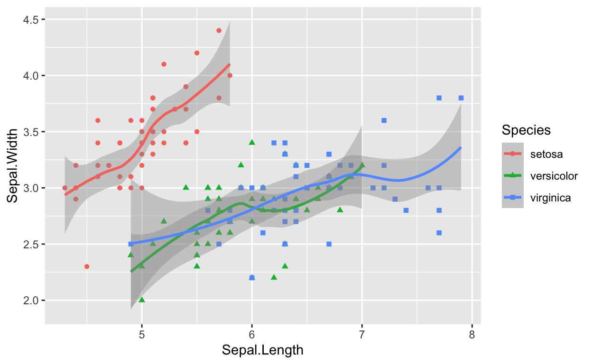

들어가기
RStudio의 R 마크다운은 기본적으로 knitr 코드 청크를 사용합니다.청크 옵션을 아는만큼 문서의 품질이 향상됩니다. 대표적인 청크 옵션을 사용하는 방법을 익혀서 여러분의 문서에 날개를 달아주기 바랍니다.
R 마크다운 문서의 이해
R 마크다운 문서의 분해
앞서 만들었던 첫 R 마크다운 문서를 분해하면 다음과 같습니다.

- YAML 헤더
- R 마크다운의 헤더 영역으로, 출력 문서를 세부적으로 제어합니다.
- R 코드 청크
- 수행할 R 코드를 포함한 영역입니다.
- 마크다운 태그를 포함한 텍스트
- 문서의 서식과 텍스트를 정의하는 영역입니다.
튜토리얼의 범위
이 튜토리얼은 R 마크다운 문서의 분해 중에서의 knitr의 R 코드 청크 옵션을 이해할 목적으로 진행합니다. 대표적인 청크 옵션을 이해하고, 다루지 않는 다른 옵션의 사용을 시도할 수 있는 자신감 함양을 유도합니다.
knitr의 R 코드 청크
청크의 구조 이해하기
우리는 지금 R 코드 청크를 다루고 있습니다. 그런데 knitr은 bash sehll(리눅스 쉘 스크립트), python(파이썬) 코드 청크 외에 몇개의 코드 청크를 지원합니다.
예를 들어 R 마크다운에서 리눅스 쉘 스크립트 청크를 사용하려면 다음과
같이 기술합니다. 이것은 리눅스에서 날짜를 조회하는
명령어인 date를 수행한 후 그
결과를 마크다운 문서에 삽입합니다.
bash 코드청크
```{bash}
# 날짜와 일시 출력
date
# 'YYYY-MM-DD' 포맷의 날짜 출력
date +'%Y-%m-%d'
```
수행결과
# 날짜와 일시 출력
date
# 'YYYY-MM-DD' 포맷의 날짜 출력
date +'%Y-%m-%d'## Mon Jun 20 22:37:31 KST 2022
## 2022-06-20브레이스({) 뒤에 오는 ’bash’는 bash 쉘이 코드 청크를 실행하라는 의미입니다. 그러면, R에게 실행을 요청하기 위한 청크는 다음과 같이 사용합니다. 당연히 브레이스 뒤에 ’r’이 따라옵니다.
```{r 청크이름, 옵션이름=옵션값, 옵션이름=옵션값, ...}
R 코드 삽입 영역
```
- 청크 이름은 청크를 식별하는 식별자입니다.
- 청크 이름을 기술하지 않아도 청크는 정상적으로 수행됩니다.
- R 마크다운 컴파일의 진행경과
- 오류가 발생하는 청크의 인식 등을 위해 기술하는 것이 좋습니다.
- 옵션이름 = 옵션값 형식으로 옵션을 기술합니다.
- 옵션을 기술하지 않아도 됩니다.
- 이 경우에는 옵션의 기본 설정값이 적용됩니다.
knitr의 R 코드 청크 옵션
knitr 홈페이지의 https://yihui.org/knitr/options/ 페이지에는 청크 옵션에 대해서 잘 설명되어 있습니다.
다음은 대표적인 청크 옵션의 목록입니다. 이 옵션들은 반드시 숙지하시기 바랍니다.
코드와 결과 출력 관련 청크 옵션
튜토리얼에서 익혀야 할 출력 관련 대표적인 청크 옵션입니다.
| 옵션 | 기본값 | 기능 |
|---|---|---|
| eval | TRUE | 청크를 실행하고, 그 결과를 삽입하는 여부 설정 |
| echo | TRUE | 실행한 명령어도 함께 출력하는지의 여부 설정 |
| warning | TRUE | 경고 메시지의 출력 여부 설정 |
| error | FALSE | 에러 메시지의 출력 여부 설정 |
| message | TRUE | 경고, 에러 외의 메시지의 출력 여부 설정 |
| tidy | FALSE | R 코드를 깔끔하게 정돈해서 출력할지의 여부 설정 |
| comment | “##” | 실행 결과 출력 각 라인의 앞에 넣을 prefix |
시각화 관련 청크 옵션
튜토리얼에서 익혀야 할 시각화 관련 대표적인 청크 옵션입니다.
| 옵션 | 기본값 | 기능 |
|---|---|---|
| fig.width | 7 | 출력을 위해 생성할 이미지 파일의 너비, 단위: 인치. |
| fig.height | 7 | 출력을 위해 생성할 이미지 파일의 높이, 단위: 인치. |
| fig.align | “default” | 플롯의 정렬 방법. "left", "right",
"center"에서 선택 |
| fig.path | ‘figure/’ | 시각화 이미지 파일을 저장할 디렉토리 경로 |
| fig.cap | NULL | 플롯의 캡션 문자 정의 |
| out.width | 시각화가 화면에 출력되는 너비, 예) “75%”, “300px” |
핸즈온 준비하기
핸즈온 파일 다운로드하기
- 핸즈온 튜토리얼을 수행하기 위해서 아래 “청크 옵션 이해하기 튜토리얼
파일” 링크의 R 마크다운 파일을 다운로드합니다.
- 링크에 마우스를 올려, 오른쪽 버튼으로 “다른이름으로 파일저장”을 실행합니다.
- 다운로드한 파일을 RStudio로 읽어들입니다.
핸즈온
1. R 코드 출력 제어하기
1.1. R 코드와 함께 결과 출력하기
- 다음 지문을 수행할, 분석 경험을 위해 코드와 결과를 공유할 청크를 만들려고 합니다.
- iris 데이터에서 중복인 데이터가 1건 있습니다. 추출하여 출력해 보세요.
- R 코드와 결과를 함께 출력해 보세요.
- 청크 이름은 ’dup_iris’로 정의합니다.
- ’understand_chunk.Rmd’의 1-1. 빈 영역을 채우고 실행해 봅니다.
- 모범 답안을 보지 않고 만들어 보세요.
힌트 보기
여러 방법이 있는데, 다음 코드를 사용해 보세요.
iris[duplicated(iris), ]모범 답안
```{r dup_iris}
iris[duplicated(iris), ]
```실행 결과
iris[duplicated(iris), ]
## Sepal.Length Sepal.Width Petal.Length Petal.Width Species
## 143 5.8 2.7 5.1 1.9 virginica1.2. 결과만 출력하기
- 다음 지문을 수행할, 분석 결과만 공유할 청크를 만들려고 합니다.
- summary() 함수로 iris 데이터의 각 변수들을 요약해 보세요.
- 결과만 출력해 보세요.
- 청크 이름은 ’dup_iris_result’로 정의합니다.
- ’understand_chunk.Rmd’의 1-2. 빈 영역을 채우고 실행해 봅니다.
- 모범 답안을 보지 않고 만들어 보세요.
힌트 보기
다음 코드를 사용해 보세요.
summary(iris)모범 답안
```{r dup_iris_result, echo=FALSE}
summary(iris)
```실행 결과
## Sepal.Length Sepal.Width Petal.Length Petal.Width
## Min. :4.300 Min. :2.000 Min. :1.000 Min. :0.100
## 1st Qu.:5.100 1st Qu.:2.800 1st Qu.:1.600 1st Qu.:0.300
## Median :5.800 Median :3.000 Median :4.350 Median :1.300
## Mean :5.843 Mean :3.057 Mean :3.758 Mean :1.199
## 3rd Qu.:6.400 3rd Qu.:3.300 3rd Qu.:5.100 3rd Qu.:1.800
## Max. :7.900 Max. :4.400 Max. :6.900 Max. :2.500
## Species
## setosa :50
## versicolor:50
## virginica :50
##
##
## 1.3. 소스 코드만 출력하기
- 소스만 설명하려 합니다. 즉, 소스를 실행하지 않고, 출력만 해야 합니다.
- summary() 함수로 iris 데이터의 각 변수들을 요약하는 소스를 출력하세요.
- 청크 이름은 ’iris_not_run’으로 정의합니다.
- ’understand_chunk.Rmd’의 1-3. 빈 영역을 채우고 실행해 봅니다.
- 모범 답안을 보지 않고 만들어 보세요.
힌트 보기
다음 코드를 사용해 보세요.
summary(iris)모범 답안
```{r iris_not_run, echo=TRUE, eval=FALSE}
summary(iris)
```실행 결과
summary(iris)
1.4. 경고 메시지 출력하기
- 다음을 수행해 보세요.
- -2부터 2까지의 정수 5개의 로그 값을 계산해 보세요.
- 청크 이름은 ’log_integer’로 정의합니다.
- ’understand_chunk.Rmd’의 1-4. 빈 영역을 채우고 실행해 봅니다.
- 모범 답안을 보지 않고 만들어 보세요.
- 어떤 결과가 출력되었나요?
- 음수일 경우에 발생하는 경고 메시가 출력됨을 확인하세요.
힌트 보기
다음 코드를 사용해 보세요.
log(-3:3)모범 답안
```{r log_integer}
log(-3:3)
```실행 결과
log(-3:3)
## Warning in log(-3:3): NaNs produced## [1] NaN NaN NaN -Inf 0.0000000 0.6931472
## [7] 1.09861231.5. 경고 메시지 출력하지 않기
- 다음을 수행할 때 경고 메시지가 출력되는 것을 이미 알고 있습니다.
- -2부터 2까지의 정수 5개의 로그 값을 계산해 보세요.
- 경고 메시지를 출력하고 싶지 않습니다.
- 청크 이름은 ’no_warning’로 정의합니다.
- ’understand_chunk.Rmd’의 1-5. 빈 영역을 채우고 실행해 봅니다.
- 모범 답안을 보지 않고 만들어 보세요.
힌트 보기
다음 코드를 사용해 보세요.
log(-3:3)모범 답안
```{r no_warning, warning=FALSE}
log(-3:3)
```실행 결과
log(-3:3)
## [1] NaN NaN NaN -Inf 0.0000000 0.6931472
## [7] 1.09861231.6. 커맨트 변경하기
- 앞의 튜토리얼 결과를 보면, 출련된 각 라인에 “##”가 앞에 출력되었습니다.
- lm(Sepal.Width ~ Sepal.Length, data = iris)를 실행하세요.
- “##”가 보기 싫습니다. 차라리 출력되지 않았으면 좋겠습니다.
- 청크 이름은 ’change_comment’로 정의합니다.
- ’understand_chunk.Rmd’의 1-6. 빈 영역을 채우고 실행해 봅니다.
- 모범 답안을 보지 않고 만들어 보세요.
힌트 보기
comment 옵션을 사용합니다.
모범 답안
```{r change_comment, comment=""}
lm(Sepal.Width ~ Sepal.Length, data = iris)
```실행 결과
lm(Sepal.Width ~ Sepal.Length, data = iris)
Call:
lm(formula = Sepal.Width ~ Sepal.Length, data = iris)
Coefficients:
(Intercept) Sepal.Length
3.41895 -0.06188 2. 플롯 출력하기
2.1. R 코드와 함께 플롯 출력하기
- 다음 지문을 수행할, 분석 경험을 위해 코드와 결과를 공유할 청크를 만들려고 합니다.
- iris 데이터에서 Sepal.Width ~ Sepal.Length 관계를 산점도로 시각화 하세요.
- Species별로 도형의 모양과 색상을 달리 그리세요.
- loess 산점도 위에 추세선도 출력하세요..
- R 코드와 결과를 함께 출력해 보세요.
- 청크 이름은 ’scatter’로 정의합니다.
- ’understand_chunk.Rmd’의 2-1. 빈 영역을 채우고 실행해 봅니다.
- 모범 답안을 보지 않고 만들어 보세요.
힌트 보기
여러 방법이 있는데, 다음 코드를 사용해 보세요.
library(ggplot2)
ggplot(data = iris, aes(x = Sepal.Length, y = Sepal.Width,
color = Species, shape = Species)) +
geom_point() +
geom_smooth()모범 답안
```{r scatter}
library(ggplot2)
ggplot(data = iris, aes(x = Sepal.Length, y = Sepal.Width,
color = Species, shape = Species)) +
geom_point() +
geom_smooth()
```실행 결과
library(ggplot2)
ggplot(data = iris, aes(x = Sepal.Length, y = Sepal.Width,
color = Species, shape = Species)) +
geom_point() +
geom_smooth()
## `geom_smooth()` using method = 'loess' and formula 'y ~ x'
2.2. 플롯만 출력하기
- 2.1. 결과에서 R 소스와 메시지의 출력 없이 플롯만 출력하려 합니다.
- 청크 이름은 ’plot_only’로 정의합니다.
- ’understand_chunk.Rmd’의 2-2. 빈 영역을 채우고 실행해 봅니다.
- 모범 답안을 보지 않고 만들어 보세요.
힌트 보기
여러 방법이 있는데, 다음 코드를 사용해 보세요.
ggplot(data = iris, aes(x = Sepal.Length, y = Sepal.Width,
color = Species, shape = Species)) +
geom_point() +
geom_smooth()모범 답안
```{r plot_only, echo=FALSE, message=FALSE}
ggplot(data = iris, aes(x = Sepal.Length, y = Sepal.Width,
color = Species, shape = Species)) +
geom_point() +
geom_smooth()
```실행 결과

2.3. 플롯 정렬하기
- 2.2. 결과에서 플롯을 화면의 가운데 정렬로 출력하려 합니다.
- 청크 이름은 ’plot_center’로 정의합니다.
- ’understand_chunk.Rmd’의 2-3. 빈 영역을 채우고 실행해 봅니다.
- 모범 답안을 보지 않고 만들어 보세요.
힌트 보기
fig.align 인수를 사용합니다.
모범 답안
```{r plot_center, echo=FALSE, message=FALSE, fig.align="center"}
ggplot(data = iris, aes(x = Sepal.Length, y = Sepal.Width,
color = Species, shape = Species)) +
geom_point() +
geom_smooth()
```실행 결과

2.4. 플롯 화면출력 크기 조절하기
- 2.3. 결과에서 플롯을 화면의 영역의 1/2 사이즈로 출력하려 합니다.
- 청크 이름은 ’plot_half_width’로 정의합니다.
- ’understand_chunk.Rmd’의 2-4. 빈 영역을 채우고 실행해 봅니다.
- 모범 답안을 보지 않고 만들어 보세요.
힌트 보기
out.width 인수를 사용합니다.
모범 답안
```{r plot_half_width, echo=FALSE, message=FALSE, fig.align="center", out.width="50%"}
ggplot(data = iris, aes(x = Sepal.Length, y = Sepal.Width,
color = Species, shape = Species)) +
geom_point() +
geom_smooth()
```실행 결과

2.5. 플롯 출력에 캡션 넣기
- 2.3. 결과에 캡션을 출력하려 합니다.
- “iris 품종별 산점도”라는 캡션을 추가합니다.
- 청크 이름은 ’plot_caption’으로 정의합니다.
- ’understand_chunk.Rmd’의 2-5. 빈 영역을 채우고 실행해 봅니다.
- 모범 답안을 보지 않고 만들어 보세요.
힌트 보기
fig.cap 인수를 사용합니다.
모범 답안
```{r plot_caption, echo=FALSE, message=FALSE, fig.align="center", fig.cap="iris 품종별 산점도"}
ggplot(data = iris, aes(x = Sepal.Length, y = Sepal.Width,
color = Species, shape = Species)) +
geom_point() +
geom_smooth()
```실행 결과

(#fig:plot_caption)iris 품종별 산점도
요약
핸즈온 요약
- knitr 청크의 종류별로 다양한 출력 포맷의 문서를 작성했습니다.
- knitr 시각화 컨트롤 청크를 이용해서 플롯을 다양하게 출력했습니다.
I can do it
- knitr의 대표적인 청크 옵션을 숙지해서, 화면에 분석 결과와 플롯 출력의 모양을 원하는대로 조정할 수 있습니다.